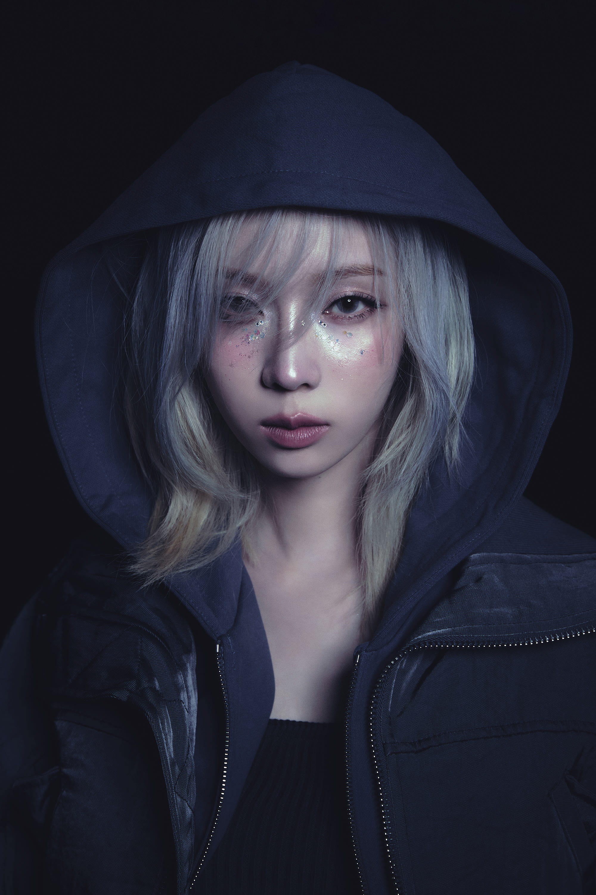

A
E
S
P
A
winter

winter's personal profile
She was born in Busan, South Korea.
Winter has a dimple on her left cheek.
She intended to become an actress, but she likes to sing and dance, so she decided to become an idol.
Winter likes eating chocolate and sweets.
Official Accounts
ins:
@imwinter(winter)